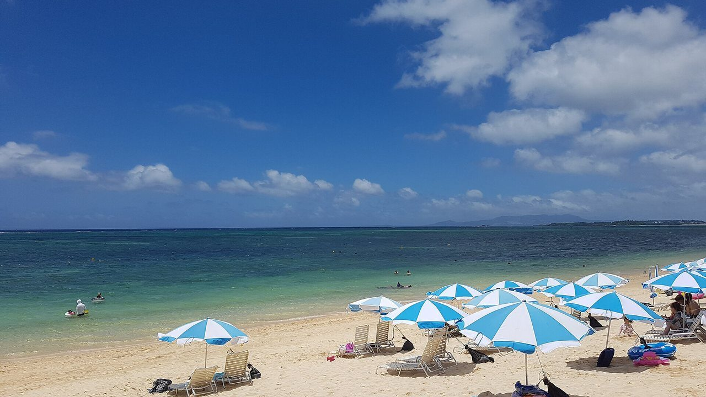

Race, Okinawa Coast Road

Behind
Best +0:01
371W
Target 418 W-47 W
- Cadence
- 87rpm
- Heart
- 140bpm
- Speed
- 26.5km/h
Recover7 of 13
2:30
Next: · 1:00 at level 24
+0.2%
36 m climbed
11.83 km
13
Resistance / 32
Solo races your best-time ghost: position reads Ahead or Behind, and solo alone gets a Pause button. Frozen at 28:30.